0200 – Less scrolling: all outputs together, a floating set-up window
All pictures are the real app (Blender 5.2.3, on the 4-core web test machine without a graphics card, under a virtual screen), with the test crane, the test gantry and the test linkage – nothing of yours. UI scale 1.5, shown at their own size. These are prototypes: nothing here is in the app yet; 0062 builds what you tick. ★ = my recommendation (ticked to start with). Tick, press Copy and paste the line to the lead.
1 · All ways to make an output, together
Today the outputs sit in three sections, several screens apart:
| Output | Where today | Settings it needs |
|---|---|---|
| Picture of this view (Render image, Live preview) | 5 Scene & Render › Image size & render | format, size, orientation, quality; fold Files & graphics card |
| Turntable video | 5 Scene & Render › Turntable video | length, camera height, quality; size and file from 6 Animation's "Turntable" |
| 3D page (web 3D model) | 5 Scene & Render › Web 3D model | texture size, names, views, folds Surroundings / Light / On the page; Export… |
| Saved scenes to the queue (Queue this / Queue all) | 5 Scene & Render › Saved scenes | a saved scene |
| Animation video (Build & play, Time test, Render animation) | 6 Animation, below all the steps | size, shape, file, quality of the selected animation |
| Product video | 6 Animation › fold Make a product video | its own settings in the fold |
| Titles, brand, pictures, music (finishing a video) | 6 Animation › Finishing, Pictures, Music; 5 › Brand kit, Labels, Watermark | – |
| Render queue: current view, all scenes, every paint scheme, Start / Start later | 7 Render queue | the queue list |
| House: Bake and export (only with a house) | 5 Scene & Render › House from House Planner | moments, sizes |
Not outputs in this sense: Make toolpath (writes a G-code file, 4 Motion › Milling), the clash check's rows, the PC check report.
Measured: the app's own sub-panels open as floating popovers (layout.popover / wm.call_panel) – nothing has to be copied. They need a width set (they open ~10 units narrow), and the app's text wrapping measures the side panel, so a few long hints are cut with "…" inside a popover (0062 fixes the helper). A popover closes when you click in the 3D view – fine for output settings, which need no clicks in the view.
A "Make" panel at the top of the Fresing tab cost for 0062: M
Six big buttons side by side: Picture, Product video, Turntable, 3D page, Animation, Queue. Each opens that output's settings and its Make button as a floating popover (the same panels as today). The sections 1–7 keep their numbers and their panels, so none of the ~510 section references in the code and ~150 in the guide change.
Why ★: every output is one click from the top, whatever section you are in, and it costs no renumbering.
Could break: the panel adds ~310 px at the top (scale 1.5): real-app tests that click fixed spots in the side panel move (0197 lists 19 files) unless it starts folded; guide pictures of 1 Import.
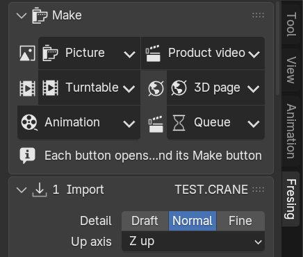
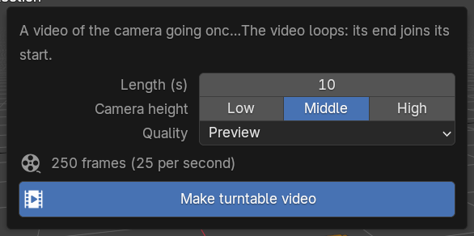
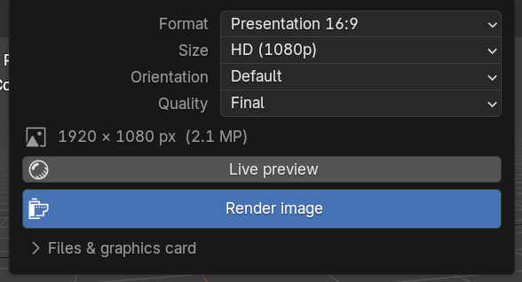
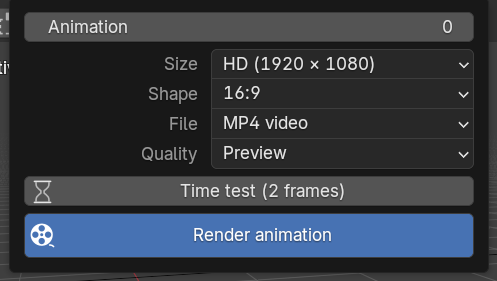
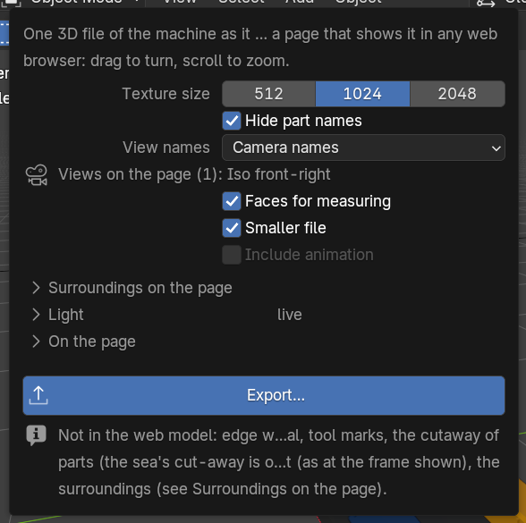
A "Make" button in the 3D view's header cost: S once A exists
Always on screen, also while the side panel shows another tab (or the set-up window is open). Each line: the Make button, and a ⚙ that opens the settings (the same popovers as A).
Why ★: the same list as A in one more place, a few lines of code; it does not take side-panel height.
Could break: nothing in the side panel; the header gets one button wider.
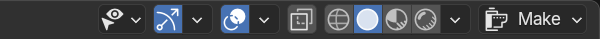
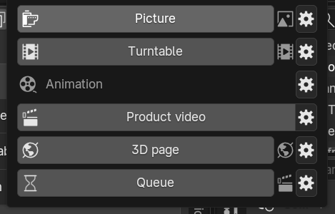
A "Make" menu in the top bar (File Edit Render Window Help Make) cost: S
One click per output. A menu cannot hold settings: it starts with the settings as they are. Pairs with 0199's Fresing top-bar menu (0199 may put it there).
Why not ★: no settings, and Blender already has a "Render" menu next to it that makes Blender's own render, not ours – easy to mix up.
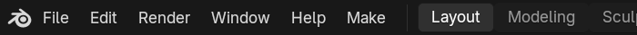
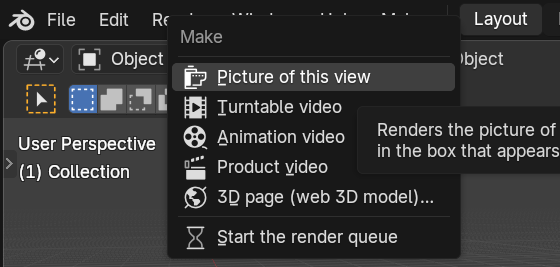
2 · The floating set-up window
Each of Blender's ways, measured in the real app with simulated mouse and keys (the CNC mill set-up as the content):
| Way | Drag it | Click a part in the 3D view | Redraw · Ctrl+Z · Ctrl+S | Second monitor | Draw time |
|---|---|---|---|---|---|
Popover (wm.call_panel, keep open) | yes, by its top edge | it closes, and the click is used up (nothing selected) | stays open on a frame change; Ctrl+Z / Ctrl+S while it is open do nothing (file not saved), also with the mouse over the view | no – inside the app window | 0.5–0.7 ms |
Dialog (invoke_props_dialog) | yes | closes, click used up | stays open on a frame change; Ctrl+Z / Ctrl+S with the mouse over it do nothing (not saved) | no | 0.35 ms |
Popup (invoke_popup) | yes | closes, click used up | stays open on a frame change; Ctrl+Z / Ctrl+S with the mouse over it do nothing (not saved) | no | 0.6 ms |
| Pie menu | no | click used up | Ctrl+S not saved | no | – (buttons only, no settings) |
| Own sidebar tab "Set-up" (next to Fresing) | no – docked | stays; the part is selected | all normal | no | 0.3 ms |
| Left toolbar (region TOOLS) | no | – | – | no | Blender refuses a tab there; without one it is 58 px wide: unusable |
| Split 3D view (a narrow area showing the Set-up tab) | no – docked, its edge can be dragged | stays | all normal | no | a second 3D view to draw |
| Second app window (prototype: "Set-up window") | yes by its title bar – a normal Windows window (not visible under the virtual screen: your check below) | stays; the click selects the part in the main window | stays open on a frame change and on Ctrl+Z; Ctrl+S saves; saved with the file and comes back on opening, with its Set-up tab | yes – an OS window (your check) | 9.5 ms for the whole small window (377×559 px), of which the panel 0.3 ms; the main window 108 ms here |
Popovers, dialogs and popups grab the keyboard while open – that is Blender's design, not something 0062 can change. The second window and the tab scroll like the side panel; scrolling inside a popover was not measured. Draw times on the test machine without a graphics card.
A second window "Set-up window" (button in each set-up sub-panel and in the Make/header list) cost: M
Opens a small window of its own (prototype 377×559 px at scale 1.0) showing the steps one at a time with Back / Next; the 3D view behind it stays usable – click the tool, the workpiece, the base. Drag it anywhere, also onto the second monitor; it stays open until you close it, and comes back with the project.
Why ★: the only way that is both floating and lets you click parts in the view.
Could break: nothing existing (new files); Blender gives the window the size of the area it is copied from, so the app first splits a small area off and closes it again (measured: the main layout comes back exactly).
Set up a CNC mill – steps 1 to 5 (the app's own buttons of 4 Motion › CNC machine; test gantry, nothing set up yet; step 3 with the block clicked):
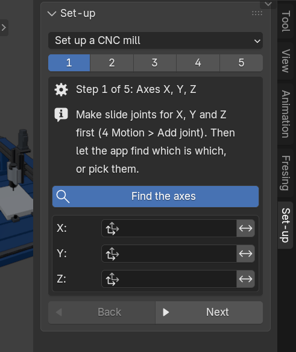
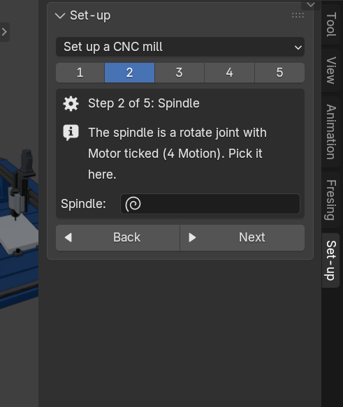
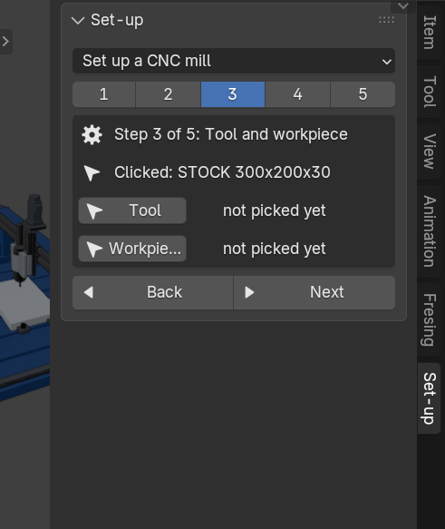
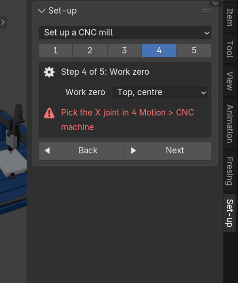
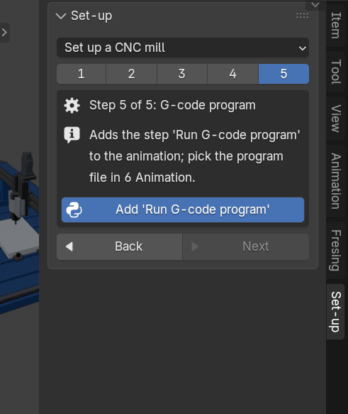
Set up a mechanism – steps 1 to 4 (test linkage, scissor lift; step 3 with the arms and platform selected):
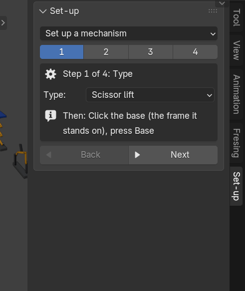
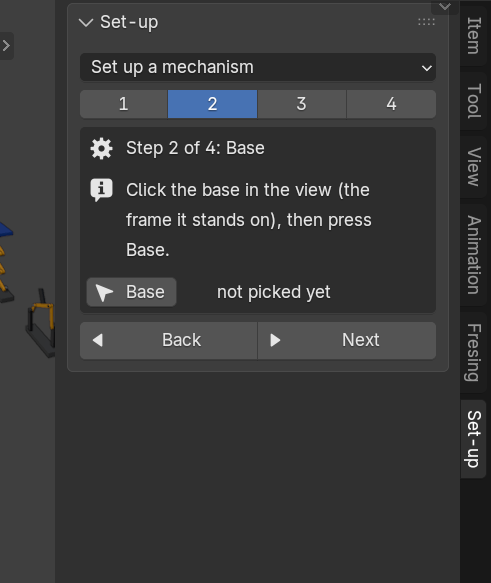
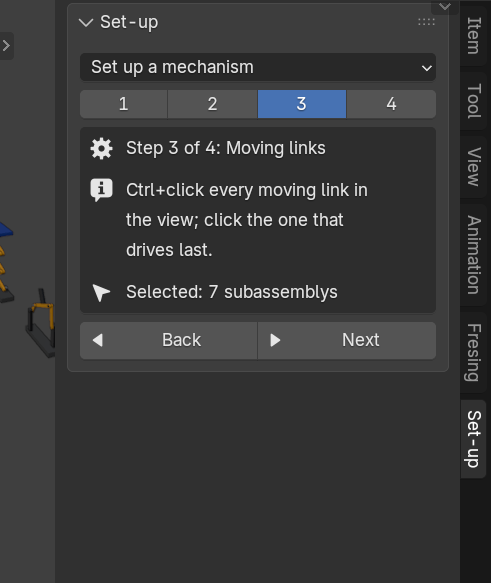
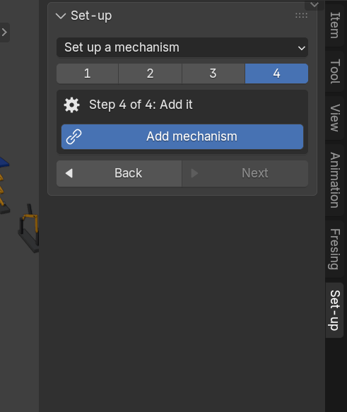
Where it sits (here over the right edge of the 3D view – on your PC you drag it where you like):
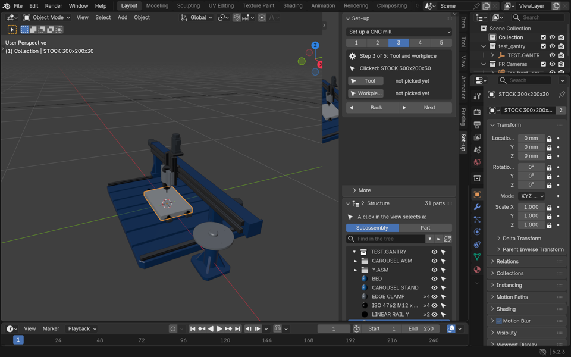
A floating popover over the 3D view cost: S
Looks the same and can be dragged, but closes at the first click in the view (and that click selects nothing), and Ctrl+S does not save while it is open. You would open it again after every click.
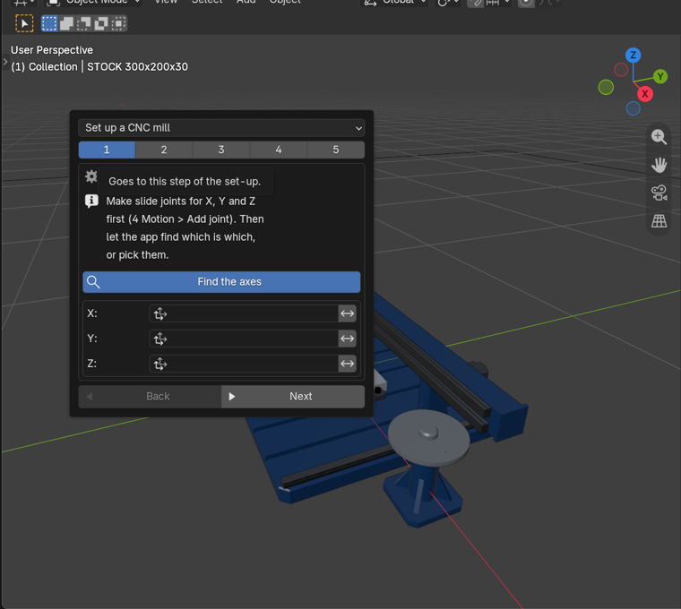
Only a "Set-up" tab in the side panel (no window) cost: S
The same step panel, docked: the tab "Set-up" next to "Fresing". No dragging, no second monitor; switching tabs hides the Fresing sections meanwhile. (With 2 the window shows this same tab, so 0062 builds this anyway.)
Split the 3D view: a narrow strip with the Set-up tab cost: S
Docked in the main window, its width can be dragged; costs a second 3D view drawn beside the first.
- Open Fresing Render and any project (for example Help › Make test tour project, then open it).
- In the 3D view's menu: View › Area › Duplicate Area into New Window. A second window opens with a copy of the 3D view.
- Drag it by its title bar onto your second monitor; make it small. In it press N and click the Fresing tab. Now click a part in the main window: the small window should stay open (does it stay in front of the main window, or go behind it?).
- Press Ctrl+S, close Fresing Render, open the project again: the small window should come back – on the second monitor?
3 · Less scrolling in the side panel
Measured heights (test crane just imported, window 1920×1200; the side panel shows 1,009 px at scale 1.0 and 962 px at 1.5). "As it starts" = sub-panels closed as in the app; "all open" = every sub-panel and fold open.
| Section | As it starts, scale 1.0 | scale 1.5 | All open, scale 1.0 | scale 1.5 |
|---|---|---|---|---|
| 1 Import | 380 | 544 | 461 | 660 |
| 2 Structure | 568 | 812 | 913 | 1,309 |
| 3 Looks | 1,076 | 1,541 | 3,432 | 4,910 |
| 4 Motion | 914 | 1,310 | 7,121 | 10,181 |
| 5 Scene & Render | 1,487 | 2,125 | 4,172 | 5,970 |
| 6 Animation | 28 (folded) | 40 (folded) | 1,372 | 1,964 |
| 7 Render queue | 28 (folded) | 40 (folded) | 346 | 496 |
| Whole side panel | 4,479 px = 4.4 screens | 6,406 px = 6.7 screens | 17,811 px = 17.7 screens | 25,478 px = 26.5 screens |
Pixels of the side panel; the sections add up to the whole within 10 px. A project with joints, animations and a queue is taller.
One section open at a time – Blender already does it: Ctrl+click a section's title cost: S (a hint + the guide)
Measured: Ctrl+click on "1 Import" folded all seven sections (a list of seven titles with their states); Ctrl+click on "4 Motion" then opened only Motion. 0062 only has to tell people (a grey hint line under the Fresing tab, the guide, the tour). Making it happen on a plain click is not possible: Blender gives an add-on no setting for a panel's open / closed state (checked: a panel has no such property).
Why ★: free today; the folded list is also the clearest overview of the project.
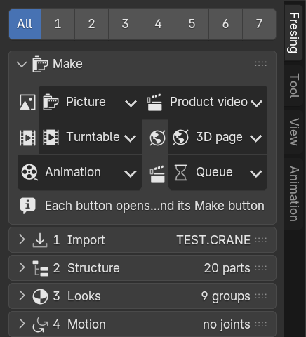
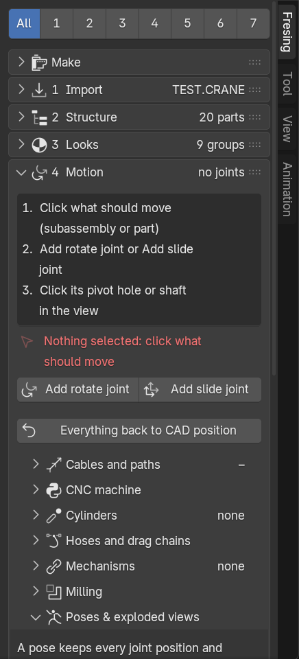
Section tabs at the top: All · 1 · 2 · … · 7 cost: M
Only the chosen section is drawn; "All" is today's panel. Longest single section as it starts: 5 Scene & Render, 1,487 px instead of 4,479 (scale 1.0). Left: tab 5 chosen; right: today (before).
Why ★: the biggest cut in scrolling, keeps the numbers 1–7 (no renumbering), and works with the workspaces of 0062 (a workspace hides tabs it does not need).
Could break: the row moves everything ~50 px down (scale 1.5) (tests that click fixed spots, every guide picture); measured: each section needs a poll written in its class (Blender ignores a poll added later; 1 Import has none today).
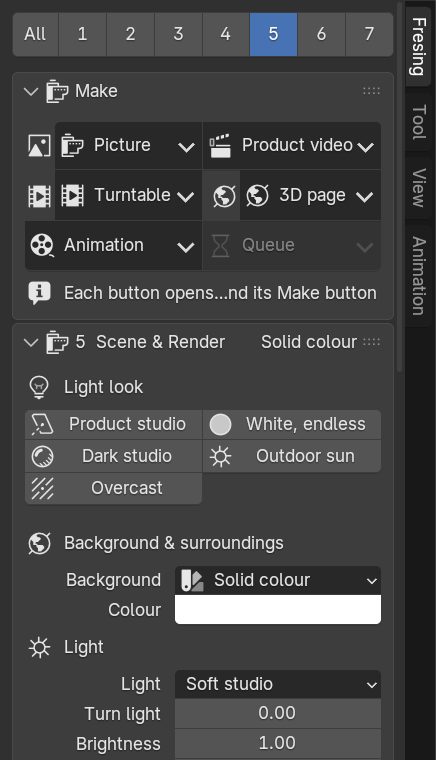
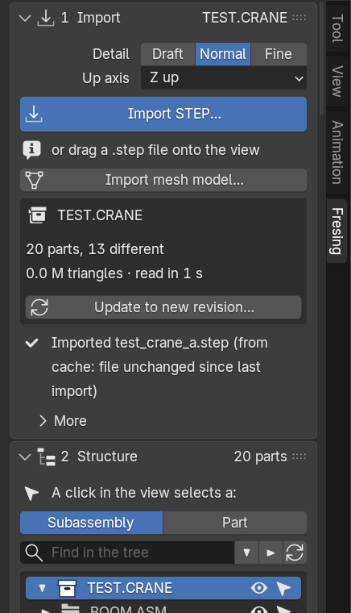
Sub-panels as popovers (a list of buttons instead of open sub-panels) cost: M–L
Measured: any sub-panel can open as a popover (the Make popovers above are the app's own panels). But a popover closes at the first click in the view, so it only suits sub-panels that need no picking (render settings, turntable, watermark, brand kit); set-ups with clicks (joints, CNC, cables) must stay in the panel or go to the set-up window.
Rarely used settings in "More" folds; how-to boxes folded once learnt cost: S–M per panel
As 0197 items 2 and 12: the numbered how-to boxes take about half of many sub-panels (CNC machine: 5 lines before the first button). Folded, "all open" 4 Motion (7,121 px at 1.0) shrinks most.
Why ★: helps in every layout, also inside the set-up window.